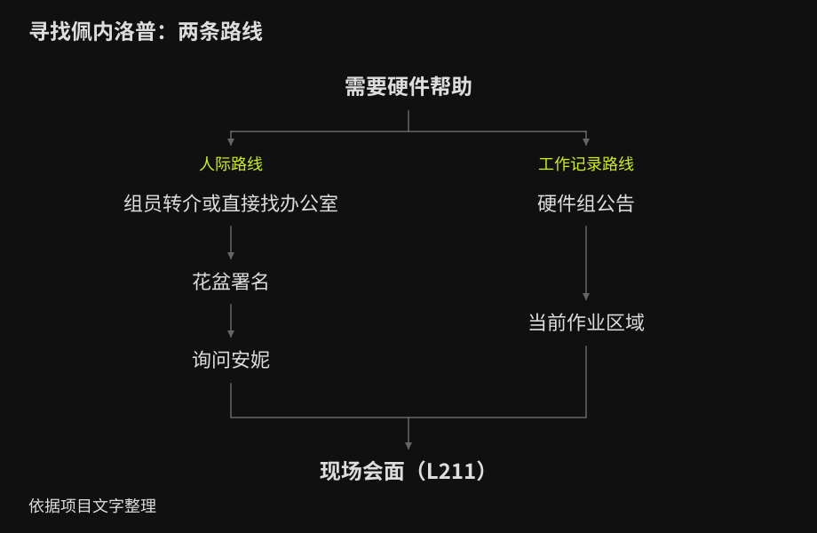
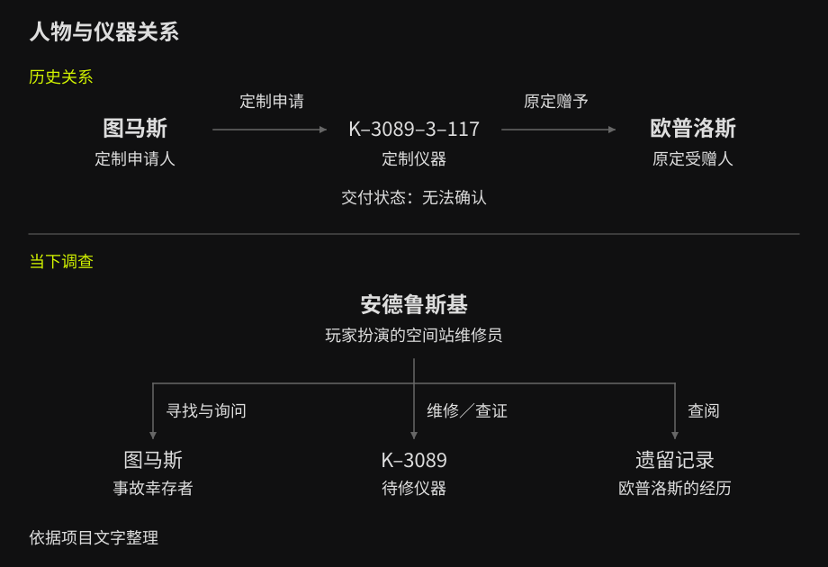

项目概览
PROJECT RECORD游戏与互动 / 2026
我的工作
叙事与内容
世界观、剧情架构、人物与任务设计，剧情对白及档案撰写。
玩法与流程
共同设计核心玩法，负责节点功能、调查路线与线索编排。
谜题与演出
所有小游戏的设计、AI辅助网页版可玩原型开发，结局演出与动画制作。
协作 / THISHI
THISHI负责界面与美术、整体程序及节点工作区开发，并将小游戏重写为Godot实现、接入提交版。
世界观、剧情架构、人物与任务设计，剧情对白及档案撰写。
共同设计核心玩法，负责节点功能、调查路线与线索编排。
所有小游戏的设计、AI辅助网页版可玩原型开发，结局演出与动画制作。
THISHI负责界面与美术、整体程序及节点工作区开发，并将小游戏重写为Godot实现、接入提交版。
玩家从对话、文件与场景中发现问题，通过节点系统查证资料，判断谁能提供帮助，再前往不同场景推进维修。新的维修结果会带来新的线索；一些早先遇到的人物或文件，也会在后续阶段成为继续追查的方向。
参考影视剧中的“侦探墙”，我们设计了节点系统，将搜集的信息与调查路径呈现在工作台上。玩家阅读结果后，可提取姓名、编号或地点，用于新的检索、询问或维修。工作台帮助保存和回看调查过程，线索之间的联系仍需玩家判断。
多条线索提供不同入口，NPC回应提示当前维修条件。
操作演示短片与五种工具的局部原图待补充。
在硬件维修阶段，娜拉能处理接口，却不熟悉这台旧终端的整机电路，因此建议玩家找佩内洛普。玩家还需查明她当前的去向，才能获得帮助。

放大我参考网状叙事与故事块（storylet）的组织思路，为同一目标安排不同线索入口，并在必要处引导玩家汇回主线，让玩家选择解决问题的方式。安妮与佩内洛普的联系补充了主线之外的生活细节；我希望这些细节让空间站更生动，使玩家在虚构世界中获得真实的情感与互动体验。
寻找图马斯时，玩家已通过公告找到临时办公室；这里可以再次想到用节点查询工作记录。
辅助材料包括图马斯临时办公安排、材料组会务状态和理查德不同时期的回应。早期原型的旧编号与版本应分别注明。
新手指引结束后，玩家接手 K-3089，并寻求不同专业人员的帮助，依次完成外壳、硬件与软件修复。每个阶段都会开放新的身份或设备信息，维修与调查由此并行推进。设备修复完成后，玩家可以结束任务，或继续审阅证据，追查十七年前的太阳风暴事故。
 放大
放大
继续调查后，玩家可以找大卫或佩内洛普核实证据并递交申请。两路进入相同的后续调查，不改变结局；大卫直接审阅材料，佩内洛普则从自己误将推测当成事实的经历谈起，再与玩家一起核查证据。
大卫直接审阅材料并推进申请。
 放大
放大
佩内洛普从自己误将推测当成事实的经历谈起，再与玩家一起核查证据。
 放大
放大
“劳拉的故事”为佩内洛普路线的补充材料，具体程序名、原句与测试细节待补充。
三个维修阶段都以获取信息、实验验证为基础，通过不同形式丰富“维修”的体验。化学处理呼应初步了解事件时的拨开迷雾；线路诊断对应逐渐产生怀疑时的顺藤摸瓜；软件修复则呼应接近真相、寻找密码的期待。
铭文无法辨认 → 依据处理反馈修复表面 → 恢复姓名与完整编号，用于继续查询。
模块断路无法启动 → 排查与连接线路 → 恢复硬件运行，获得软件修复前提。
本地文件无法读取 → 叠合、定位与指令操作 → 恢复文件读取，取得可供对照的旧配置与留言。
作者开发网页原型，Godot 版由 THISHI 重写接入。
化学处理、硬件诊断的原型与操作过程图待补充。
玩家面对程序中的三个谜题，需要从遗物中选择合适物品，找出彼此的联系。以胶片为例，我用胶片与屏幕上对应的直角标记，提示叠合的位置和方向。局部句子起初像在抱怨工作，完整句子却转向调侃图马斯；玩家仍需结合NPC与其他文件，判断两人的关系。
胶片、贴纸、碎纸等物件提供不同形式的线索。
胶片与屏幕上的直角标记，提示叠合的位置和方向。
局部句子起初像在抱怨工作，完整句子转向调侃图马斯。
以上是材料观看顺序，不规定强制解题顺序。网页版属于作者开发期原型。
玩家根据看片器“只认 *.visual”与便签的提示，将诊断文件的扩展名改为.visual，打开转译界面；再按笔记本“不要记密钥。记住那句话。”的提示输入完整句子，得到一串完整的候选密钥。
遗物托盘、叠合过程与转译画面待补充。原稿标注的开发期画面使用 K-3060，与案例中的 K-3089 提交版资料分别记录。
完成化学修复后，再访安妮可以体验她的“养石头”程序，玩法与化学修复相近。自由探索还能找到佩内洛普与医疗心理部门开发的判断力测试，使用与剧情案例、证据审阅相近的判断方式。两者都不影响主线推进，为人物日常与空间站生活提供额外入口。
玩家在不同时间点、不同任务状态下，会触发NPC的不同对白与反应。以理查德为例，设备状态、此前是否见面，以及是否继续调查，都会影响他的回应。人物既反馈当前的维修条件，也逐渐介入玩家的调查。
初次见面
安德鲁斯基：你好，我是维修员安德鲁斯基，我在维修这件设备，但是它的技术资料已经遗失了。我目前没什么头绪，你可以帮我看看吗？
理查德：严重的高温烧蚀和表面损伤，我现在什么也做不了。我这里负责的是软件和旧系统，你需要先去找材料与化学分析小组做表面修复，他们隶属于科学部。
硬件尚未修复
安德鲁斯基：关于欧普洛斯和……
理查德：等你把硬件修好了再说。
再次来访
安德鲁斯基：你好，我又来了，电路已经修好了。刚刚硬件小组的人帮我恢复了这台设备的结构和电路，它现在已经能……
理查德：搬一把椅子过来。
已选择继续调查
理查德：先看原来保留的配置和留言。
安德鲁斯基：……你早说你也想看我们刚才就不用搞得那么凝重了。
理查德：我没有。
玩家能够搜索到公告、资产档案、技术说明和私人留言。不同文本形式分别提供身份、时间、权限与人物关系等线索；由型号查到具体单机时，同一个对象也会显露更具体的信息。
| 型号 | K-3089 |
|---|---|
| 产品状态 | 已停产 |
本型号的原始维修参数已缺失，现存系列资料无法提供可直接使用的完整维修方法。本档案仅记录 K-3089 系列的基本信息。
| 设备编号 | K-3089-3-117 |
|---|---|
| 定制申请账户 | Tumas Teles |
| 登记使用者 | Opulos Cronus |
| 交付状态 | 无法确认 |
型号查询得到通用技术资料；完整编号进一步指向定制人与登记使用者，但现有记录仍不能确认交付。
设备编号：K-3089-3-117
型号：K-3089
工程终端设备类别：个人工程计算 / 控制终端
生产时间：2103
生产区域：自动制造区 L210-03
生产状态：完成
出厂检测：通过
定制申请账户：Tumas Teles
定制项目：外壳铭牌｜工程权限配置｜个人工作环境预配置
登记使用者：Opulos Cronus
资产状态：2103年太阳风暴后记录中断
交付状态：无法确认
最后同步位置：自动制造区 L210-03
硬件维护归口：工程部｜硬件系统组
备注：该设备所属生产区域于2103年太阳风暴期间脱离中央资产系统，部分设备交付、转移及库存记录未完成同步。
近期硬件系统组正在 L210 旧自动制造区进行设备回收、接口检测及重新启用前检查。
部分工作区域存在：临时供电裸露接口未固定设备工程搬运作业
非相关人员请避免进入标记区域。
如需进入 L210-03 至 L210-07，请留意现场隔离标识及硬件组工作人员指引。
工程部｜硬件系统组
“等你下次负责威士忌的时候，我再把那串数字告诉你”
玩家是一名空间站维修员，接手了一件十七年前的定制仪器。仪器已经损坏，铭文上的姓名无法辨认。为了修复它，玩家需要寻找工程师和技术人员；随着铭文、硬件和系统逐步恢复，一场太阳风暴事故，以及围绕仪器受赠人的往事，也逐渐浮现。
玩家扮演的维修员，从一件待修设备出发，逐步介入空间站的旧事。
玩家第一位接触到的重要剧情角色，资深工程师，十七年前太阳风暴事故的幸存者，也是调查中的重要讲述者。
事故中去世的工程师，仪器原定受赠人；他的经历通过他人的陈述与遗留记录逐步显现。

放大 放大
放大
完成维修后，玩家可以结束任务，也可以选择继续追查。我不希望继续调查带来一个“100%正确答案”：玩家能够修正对事故的解释，也需要面对现有证据仍然无法确认的问题。
两个结局采用同样的节点界面与运镜，让玩家仍像安德鲁斯基一样坐在终端前。镜头从新的工作节点移向人物对话，为阅读信息留出时间。节点内容与聊天关系随选择改变，让玩家看到行动留下的变化，而不替选择判定对错。
结局中的完整版“连接”功能，呼应前面的测试工具，以及停止调查路线中理查德“正在开发，马上就上线了”的预告。名单也采用节点与连线，将创作者各自的分工和共同职责呈现为一次连接。
| 内容 | 停止调查 | 继续调查 |
|---|---|---|
| 人员安排 | 图马斯再次强制休眠，相关工作移交完成。 | 其他工程师接管中央控制系统，新的维护规范正在制定。 |
| 资产与公告 | K-3089修复并归档，公共信息以日常公告为主。 | 资产档案追加“补充调查中”，出现重启事故调查公告与维护规范草案。 |
| 聊天对象 | 安妮、佩内洛普与安德鲁斯基，谈陨石样本和植物。 | 理查德、大卫与安德鲁斯基，谈技术辩论赛、工作与请客。 |
成对查阅 / 两条结局
原稿以相同时间点对照两条结局：约 18–40 秒的公告与档案，约 60 秒的维护规范，以及约 96 秒的聊天画面。
两条结局影片、对应截帧，以及制作人员名单影片与关键帧待补充。